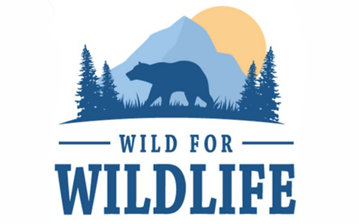
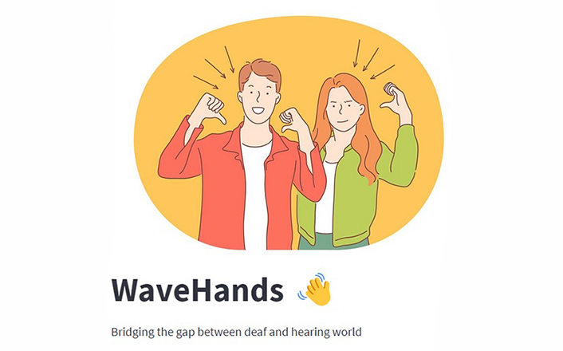
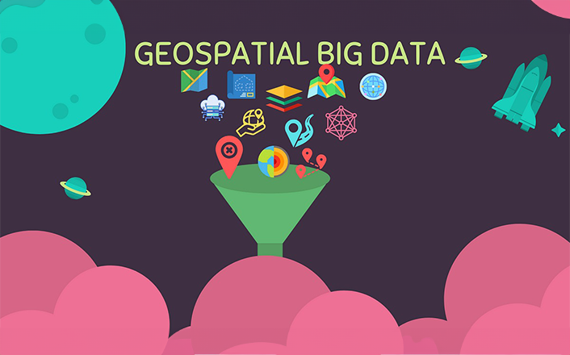

Cheril Yogi
Mixing curiosity with real-world know-how, I make data engineering and science as approachable as your favorite story.


Mixing curiosity with real-world know-how, I make data engineering and science as approachable as your favorite story.


Welcome! Here you'll find a selection of my work. Explore the projects to learn more about what I do.
This project explores the correlation between layoff announcements and the subsequent impact on a company's stock performance. By combining relational, graph, and document data models, the analysis aims to uncover patterns, trends, and potential relationships between layoffs and financial indicators.
GitHub RepositoryIntroducing a cutting-edge project using ConvLSTM and LSTM achieves 80% accuracy in predicting rain. Revolutionizing weather forecasting, I'm currently enhancing it with a user-friendly web app for seamless functionality.
GitHub RepositoryThis project utilizes Recurrent Neural Networks for a robust image captioning system. Leveraging pre-trained VGG16 model transfer values and a three-layered GRU-based decoder, it generates descriptive captions. Checkpointing ensures model stability by saving weights during training.
GitHub RepositoryIntroducing the "Unified Recognition Model": A milestone project in gender and emotion recognition. Trained on 58,000 images, it blends transfer learning and independent training to achieve 88.89% gender prediction accuracy and precise emotion recognition.
GitHub Repository"Hindi Text Generator" is a chatbot project using a sequence-to-sequence model trained on the "Story of Mirabai" dataset. It implements advanced preprocessing techniques and leverages IndicNLP for language processing tasks, ensuring coherent response generation.
GitHub RepositoryMeet the Wildlife Conservation Tracking System, enhancing conservation through streamlined employee management and robust data protection. With secure role-based access via Streamlit, data integrity through SQL, and PowerBI for insightful dashboards, it optimizes querying and safeguards data efficiently.
GitHub Repository WaveHands, an innovative web app, elevates communication accessibility for the hearing-impaired. Powered by Streamlit, it converts audio and YouTube videos into three sign languages using airflow dag and WhisperAPI. The app also enables real-time sign language communication through a live camera feed using Google Vertex AI. This project exemplifies technology's potential to address social issues and provide inclusive solutions.
GitHub Repository The Geospatial Data Extraction App is a modular and scalable tool using Streamlit, FastAPI, Docker, and Airflow. It ensures efficient handling of logical and file transfer operations, and Docker enhances standardization, reliability, and scalability. A valuable asset for businesses.
GitHub Repository Facial Age Classification and Sentiment Analysis: This project showcases advanced machine learning with a 2-layer CNN and Pre-trained ResNet50 for Facial Age Classification, reaching an 87% accuracy. Additionally, 5000 Amazon reviews on Apple Airpods (2nd Gen.) were scraped for Sentiment Analysis.
GitHub RepositoryThe Liver Donation System addresses cirrhosis impact in the USA, connecting donors and patients through a streamlined platform. It ensures trust with validation checkpoints, facilitating communication and increasing life-saving opportunities.
GitHub RepositoryIn my continuous hobby project, ReadRight, I am dedicated to identifying and mitigating the risk of dyslexia in individuals. The project revolves around developing a web application that harnesses the power of a machine learning model. This model analyzes the risk of dyslexia based on responses provided by users through a questionnaire. To enhance the overall experience and effectiveness, the application will also feature interactive games aimed at gradually reducing the risk of dyslexia over time. The ultimate aim is to create a supportive and proactive tool for individuals at risk of dyslexia.
GitHub RepositoryDiscover insightful articles and discussions in my blog.
Discover key insights into texture segmentation in image processing in this Medium post. It covers texture definition, challenges, and feature extraction methods, including statistical, structural, model-based, and transform-based approaches. Check it out for a quick overview!
Read MoreThis blog introduces SARIMA, an ARIMA extension for time-series with seasonal patterns. It covers components, parameters, and highlights advantages over ARIMA. The practical Python example using statsmodels guides readers through essential steps for hands-on SARIMA understanding.
Read More
This post delves into causal inference, differentiating it from correlation analysis and stressing its role in understanding cause-and-effect relationships. It explores applications in healthcare and business, connecting reinforcement learning and causality in machine learning.
Read MoreHello there! 👋 I'm on a data-driven adventure, with a Master of Science degree in Information Systems from Northeastern University in Boston. Imagine this: I'm part of the data journey, helping to make things happen by working on cool data pipelines and diving into the world of machine learning at Nath Power Solution. Just a regular person excited about what I do! Whether I'm coding in Python, Java, or C++, or orchestrating data projects in the cloud, I'm all about pushing the boundaries of data science and machine learning. It's a wild journey, and I'm not just here to bring my skills to the table but to soak up every bit of knowledge this dynamic landscape has to offer. Drop me a line via email or catch up with me on LinkedIn and Medium—I'm always up for turning data into something extraordinary!
You can also check out my resume for more details about my experience and skills.